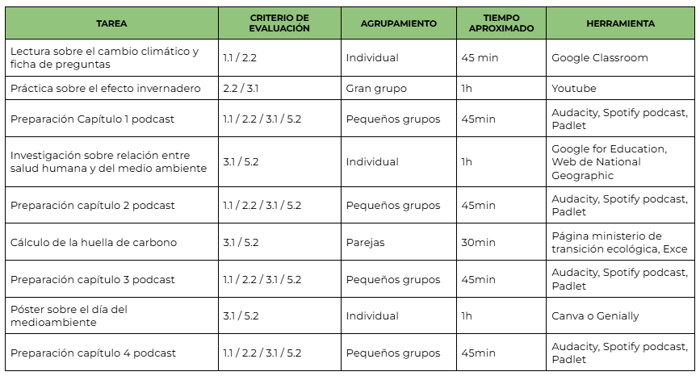

Guía didáctica

Criterios y competencias
1. Interpretar y transmitir información y datos científicos argumentando sobre ellos y utilizando diferentes formatos para analizar conceptos y procesos de las ciencias biológicas y geológicas.
1.1. Identificar y describir conceptos y procesos biológicos y geológicos básicos
relacionados con los saberes de la materia de Biología y Geología, localizando y seleccionando información en diferentes formatos (modelos, gráficos, tablas,
diagramas, formulas, esquemas, símbolos, páginas web, etc.), explicando en una o más lenguas las principales teorías vinculadas con la materia y su relación con la mejora de la vida de las personas, iniciando una actitud crítica sobre la potencialidad de su propia participación en la toma de decisiones y expresando e interpretando conclusiones.
2. Identificar, localizar y seleccionar información, contrastando su veracidad,
organizándose y evaluándola críticamente, para resolver preguntas relacionadas con las ciencias biológicas y geológicas.
2.2. Localizar e identificar la información sobre temas biológicos y geológicos con base científica, a través de distintos medios, comparando aquellas fuentes que tengan criterios de validez, calidad, actualidad y fiabilidad, iniciar el proceso de contraste con las pseudociencias, bulos, teorías conspiratorias y
creencias infundadas, y elegir los elementos clave en su interpretación que le permitan mantener una actitud escéptica ante estos.
3. Planificar y desarrollar proyectos de investigación, siguiendo los pasos de las
metodologías científicas y cooperando cuando sea necesario, para indagar en
aspectos relacionados con las ciencias geológicas y biológicas.
3.1. Analizar preguntas e hipótesis e intentar realizar predicciones sobre fenómenos biológicos o geológicos que puedan ser respondidas o contrastadas, utilizando métodos científicos, intentando explicar fenómenos biológicos y geológicos sencillos, y realizar predicciones sobre estos.
5. Analizar los efectos de determinadas acciones sobre el medioambiente y la salud, basándose en los fundamentos de las ciencias biológicas y de la Tierra,
para promover y adoptar hábitos que eviten o minimicen los impactos medio ambientales negativos, sean compatibles con un desarrollo sostenible y permitan mantener y mejorar la salud individual y colectiva, todo ello teniendo como marco el entorno andaluz.
5.2. Proponer y adoptar hábitos sostenibles básicos, analizando de una manera critica las actividades propias y ajenas, a partir de los propios razonamientos,
de los conocimientos adquiridos y de la información disponible.
Observaciones y recomendaciones para el profesorado
Las herramientas digitales propuestas deben ser sencillas, intuitivas y accesibles para el alumnado de 1.º de ESO, priorizando aquellas que permitan grabar, editar y compartir audio o vídeo de forma guiada y segura.
Se recomienda dedicar una sesión inicial a explicar el uso básico de las aplicaciones seleccionadas y establecer roles dentro de cada grupo (guionista, locutor/a, técnico/a, editor/a) para facilitar la organización del trabajo cooperativo.
Es conveniente proporcionar plantillas de guion y rúbricas claras de evaluación que orienten al alumnado durante todo el proceso. Asimismo, se aconseja supervisar aspectos relacionados con la protección de datos, el uso responsable de la imagen y la voz, y fomentar la revisión previa de los contenidos científicos para asegurar el rigor propio de la materia de Biología y Geología.
Finalmente, puede resultar útil realizar pequeños ensayos de grabación antes del producto final para mejorar la expresión oral, la competencia digital y la confianza del alumnado.